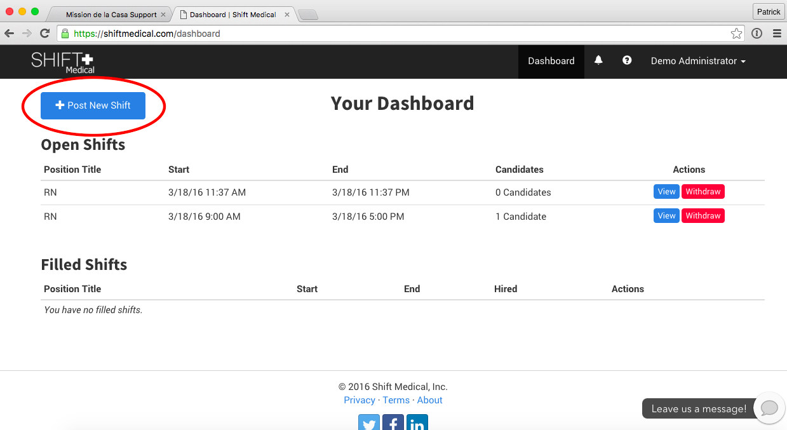

|
For Nursing Staff |
A Brief Introduction to the Shift Medical platform for Nursing Staff |
The Shift Medical platform replaces your organization's phone tree and allows your scheduler and nurse managers to immediately notify you of open shifts. Based on your personal preferences, these notifications are sent to either your smartphone via text, or your e-mail account.
|
How to Create a Nurse Staff Account |
A new account can only be requested by the nurse manager(s) or scheduler of an organization. If you do not currently have an account, please speak with a manager or your scheduler and ask them to submit a request to have your account created. |
Logging into your Account |
You can log into your account by opening https://www.shiftmedical.com on any computer or mobile device with an internet connection. In the top right corner of the screen you will see the link Sign In. Click on this link and you will be directed to the log in page where you can enter your login and password.
|
Applying for Shifts |
1. When a new shift is posted you will receive an SMS and/or e-mail notification with a link to log in and view the available shifts. 2. After logging into the platform you will see the open shifts in the table at the bottom of the screen. Click on the green "Apply" button next to the shift(s) that you wish to apply for. |
Changing Your Notification Settings |
1. Sign into the Shift Medical platform and click on the upsidedown triangle next to your name in the top right corner of the screen. 2. In the dropdown menu that appears, select "Settings". 3. The page that appears contains your personal settings. To change how you receive notifications, select the appropriate option and click the "Submit" button to save your selection. |
Changing your Password |
1. Similar to changing your notifications, click on the upsidedown triangle next to your name in the top right corner of the screen and select "Settings" 2. The page that appears contains your personal settings. Select on the "Password" menu option in the menu on the left of the screen. 3. To change your password, enter your current password, followed by your new password in the fields provided. Click on "Update Password" to submit the change. |
|
For Managers & Schedulers |
A Brief Introduction to the Shift Medical platform |
The Shift Medical platform replaces your organization's existing phone tree, allowing you to quickly broadcast open shifts directly to your internal employees’ phone and e-mail. You are then instantly notified once an employee expresses interest in picking up the shift. From your desktop or phone you can review the interested employees and notify the individual you select to fill the opening. |
How to Create (or Delete) a User Account |
Only nurse managers or schedulers in an organization can request the creation (or deletion) of a user account. As a part of its support services, Shift Medical is happy to take of the the creation and removal of individual accounts.
|
Logging into your Account |
You can log into your account by opening https://www.shiftmedical.com on any computer or mobile device with an internet connection. In the top right corner of the screen you will see the link Sign In. Click on this link and you will be directed to the log in page where you can enter your login and password.
|
Posting a New Shift |

1. Sign into the Shift Medical platform and click the blue "Post a New Shift" button in the top left corner of the dashboard. If you are on a mobile device this will be a blue button with a white plus sign. 2. Use the form that appears to fill in the information for each shift. Required fields are marked with an asterisk. 3. Once you will in all of the required fields, the blue "Post Shift" button will be enabled and you can click it to post the shift. |
Reposting an Existing Shift to New Groups |
1. Sign into the Shift Medical platform and click the blue "View" button to the right of the shift that you wish to repost to another group. If you are on a mobile device this will be a blue button with a white "i". 2. The screen that appears contains all of the details and activity for this shift. The table named "Recipients" lists all of the groups to which this shift has been sent. Click on the blue button beneath the table to send the shift to an additional group. 3. In the form that appears select the group to which you want to send the shift. Next, select a bonus amount to incentivize nurses to pick up the shift. Once the required information is completed you can click the "Add" button to send the shift out to the new group. |
Withdrawing a Shift |
1. Sign into the Shift Medical platform and click the red "Withdraw" button to the right of the shift that you wish to withdraw. WARNING: This action cannot be undone. |
Reviewing & Hiring Candidates |
1. When a new candidate applies to a shift that you have posted you will receive an SMS notification with a link to log in and view the candidates. 2. Sign into the Shift Medical platform and click the blue "View" button to the right of the shift that you wish to repost to another group. If you are on a mobile device this will be a blue button with a white "i". 3. The screen that appears contains all of the details and activity for this shift. The table named "Candidates" lists all of the candidates who are interested in filling the shift. Click on the green button to the right of the candidate that you wish to hire. |
Changing Notifications Settings |
1. Sign into the Shift Medical platform and click on the upsidedown triangle next to your name in the top right corner of the screen. 2. In the dropdown menu that appears, select "Settings". 3. The page that appears contains your personal settings. To change how you receive notifications, select the appropriate option and click the "Submit" button to save your selection. |
Changing your Password |
1. Similar to changing your notifications, click on the upsidedown triangle next to your name in the top right corner of the screen and select "Settings" 2. The page that appears contains your personal settings. Select on the "Password" menu option in the menu on the left of the screen. 3. To change your password, enter your current password, followed by your new password in the fields provided. Click on "Update Password" to submit the change. |
Where can I find open shifts?
Log into https://www.shiftmedical.com from any mobile device or computer with internet access. You will be taken directly to your organization's dashboard and a list of its open shifts. This dashboard is always up to date, so check back often for new shifts.
What is my log-in and password?
Your login and password have been e-mailed and texted to you directly. If you have not received them yet, or if you cannot find them, e-mail us at support@shiftmedical.com and we will resend them to you.
Where can I get help?
Our support team is available via e-mail (support@shiftmedical.com), phone (415-639-9881) and online chat through your organization dashboard.